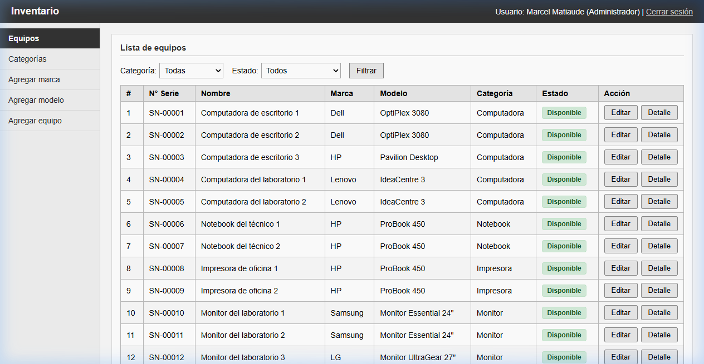

Clasificación normalizada para catalogar todo el equipamiento tecnológico de la institución.
La selección de Categoría filtra dinámicamente las Marcas y Modelos asociados mediante JavaScript asíncrono, garantizando coherencia al registrar nuevo hardware.
Control estricto de transiciones físicas garantizado por el motor relacional de base de datos.
Localización inmediata de máquinas en tiempo real para auditorías y tareas de mantenimiento.
SN-00001, OptiPlex 3080).
Expediente digital individual que consolida toda la vida útil de cada máquina.
Permite auditar en segundos cualquier equipo que presente fallas recurrentes para fundamentar decisiones de recambio.